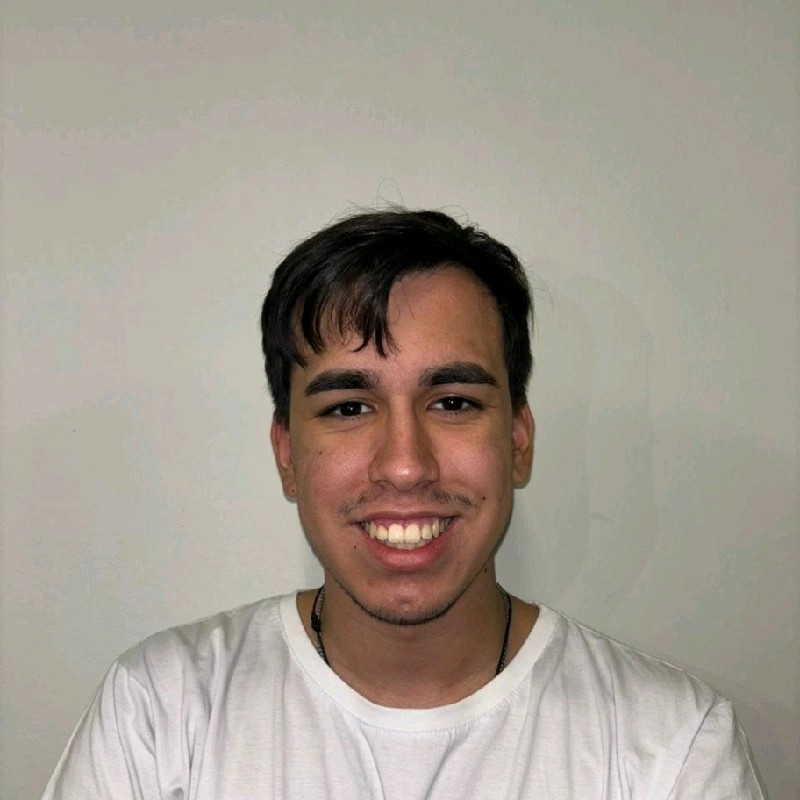

Protegendo sistemas e redes com base teórica e prática em Cibersegurança.
Olá, eu sou Felipe Madruga Gusmão. Estudante de Ciência da Computação, atuo em Cibersegurança e busco unir vivência prática e base teórica sólida.
Minha jornada em TI começou em 2023. Este Study Hub documenta, de forma versionada, a minha evolução e as evidências do que aprendi.
Ver Repositório no GitHubConectar no LinkedIn$ cat perfil.json { "nome": "Felipe Madruga Gusmão", "curso": "Ciência da Computação", "turno": "Noturno", "foco": [ "Cibersegurança", "Back-end", "Inteligência Artificial" ], "inicio_em_ti": 2023, "status": "em evolução contínua" } $ ▍

Áreas de Atuação e Interesses
Minha jornada foi inspirada pelo meu pai, que já atuava em TI. Hoje aplico meus conhecimentos para proteger sistemas e redes contra ameaças digitais, evoluindo junto com as inovações do setor para construir ambientes digitais mais seguros, resilientes e confiáveis.
Cibersegurança
Proteção de sistemas e redes contra ameaças digitais.
- Segurança da Informação
- Red Team
- Cyber OT
Back-end e Inteligência Artificial
Base técnica para construir e entender sistemas.
- Back-end
- Inteligência Artificial
- Estudo contínuo e documentado
Competências Técnicas
Ferramentas que uso neste portfólio.
GitGitHubHTMLCSSJavaScriptProjetos em Destaque
Use os filtros para explorar por área.
ChegouAi
Projeto acadêmico desenvolvido na graduação. Descrição, tecnologias e link em breve.
Projeto acadêmicoSite de filmes (LTP)
Projeto da disciplina de LTP: um site sobre filmes. Detalhes e link em breve.
Projeto acadêmicoWebParadigmas
Projeto da disciplina de Paradigmas de programação. Detalhes e link em breve.
Projeto acadêmicoParadigmasStudy Hub v1.0
Este portfólio, versionado com Git e publicado no GitHub Pages.
HTMLCSSJavaScriptNenhum projeto nesta categoria por enquanto.
Trilha Acadêmica e Evidências de Aprendizado
Mapa das disciplinas com as evidências práticas registradas no repositório.
Em construção
As disciplinas e evidências serão adicionadas ao repositório a cada semana, uma pasta por disciplina.
Anatomia do Repositório
O repositório Study-Hub-TI foi organizado em pastas numeradas que contam a história acadêmica de forma clara, e cada evolução passa pelo fluxo de versionamento do Git.
- Study-Hub-TI/
- ├─
01_Apresentacao_e_Perfilperfil e apresentação - ├─
02_Disciplinas_Cursadasdisciplinas concluídas - ├─
03_Disciplinas_em_Cursoevidências em andamento - ├─
04_Projetos_e_Certificadosprojetos e certificações - └─
README.md
Boas práticas adotadas
- Nomes numerados que definem uma ordem de leitura lógica.
- Commits pequenos e descritivos que contam a evolução do trabalho.
- README como porta de entrada do repositório.
- GitHub Pages publicando este portfólio direto do repositório.
Fluxo de versionamento
Working Directory
Onde edito e crio os arquivos.
editar arquivosStaging Area
Seleciono o que vai no próximo commit.
git add .Git Local
O histórico é registrado localmente.
git commit -m "mensagem"GitHub Remoto
Publico o trabalho para todos.
git push origin main
Vamos conversar?
O Study Hub é um projeto vivo: cada commit é um passo na minha evolução contínua na carreira de TI. Fique à vontade para trocar ideias, oportunidades ou feedback.
felipipimg@gmail.comLinkedInGitHubApresentação